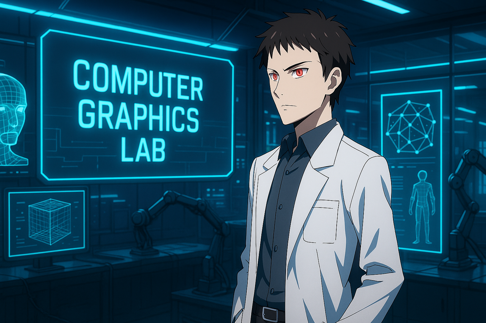

詠唱詞:
Please generate a Japanese anime-style scene with the following details:
- The scene is in a futuristic computer graphics laboratory.
- In the laboratory, a 22-year-old professor was introducing the class. (No students in the generated image.)
- The professor is Kayaba Akihiko, a thin, Japanese male professor wearing a white lab coat; please search his appearance before generating the image.
- He has white eyes with bright and glowing red irises (no glasses), fair skin, and brownish-black hair.
- He had turned slightly sideways, had a poker face and both hands in his white lab coat.